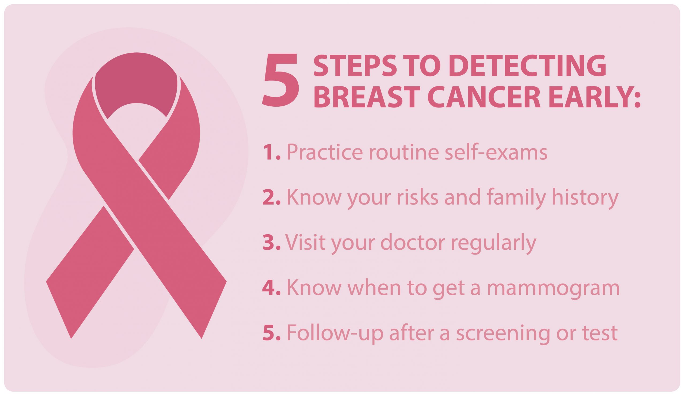

5 Steps for Breast Cancer Detection
by Noor | Mai 16 2021
According to cancer.gov, breast cancer is the second most common type of cancer in women.
Although there is no way to prevent breast cancer
There are steps you can take to detect breast cancer early, before it spreads.